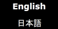

JavaScript must be enabled in order for you to use Google Maps.
However, it seems JavaScript is either disabled or not supported by your browser. To view Google Maps, enable JavaScript by changing your browser options, and then try again.